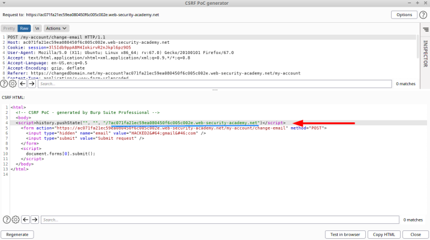

Validation of Referer can be circumvented
Circumnavigate Validation of the
RefererIf the application validates that the domain in the Referer
• starts with the expected
value, then the attacker can place this as a subdomain of their own domain:
http://vulnerable-website.com.attacker-website.com/csrf-attack• contains its own domain
name, then the attacker can place the required value somewhere in the URL:
http://attacker-website.com/csrf-attack?vulnerable-website.com Note:Although you may be able to identify this behavior using
Burp, you will often find that this approach no longer works when you go to test your proof-of-concept in a browser.
This because in an attempt to reduce the risk of sensitive data being leaked in this way, many browsers now strip
the query string from the
Referer header by default.
You can override this behavior by making sure
that the response containing your exploit has the
Referrer-Policy: unsafe-url header set. This ensures
that the full URL will be sent, including the query string.
How to test the vulnerability
This is our request
1. Try to change the value of the Referer HTTP header, the request is
rejected.
How we can see the
request is been rejected as expected2. Now copy the
original value of the Referer header and append it in the form of a query string to
the
changed value of before This mean that the WebApp is vulnerable|
How to Exploit
To create a Poc on
Burpsuite
Professional as seen HERE1. right click on the request → Engagement Tools → create CSRF PoC
2.
Options → Include Auto-submit script → Regenerate
4. Edit the JavaScript so that the third argument of the
history.pushState() function includes a query string with your lab instance URL as follows:
history.pushState("", "", "/?vulnerableVictimSite.net")
This will cause the Referer header in the generated request to contain the URL of the target site in the query
string, just like we tested earlier.
5. extra (portswigger LAB): If you store the exploit and test it by clicking
"View exploit", you may encounter the "invalid Referer header" error again. This is because many
browsers now strip the query string from the Referer header by default as a security measure. To override this
behavior and ensure that the full URL is included in the request, go back to the exploit server and add the
following header to the "Head" section:
Referrer-Policy: unsafe-url Bibliography:
•
https://portswigger.net/web-security/csrf#:~:text=Validation%20of%20Referer%20can%20be%20circumventedLAB:
https://portswigger.net/web-security/csrf/lab-referer-validation-broken